홈 › 실물 실험
실물 실험
실제 로봇으로 한 시험 기록. 최신 결과가 맨 위, 아래로 갈수록 이전 시험이다. 야지는 장소별, 실내는 시나리오별로 나눴다.
최신
최신 결과
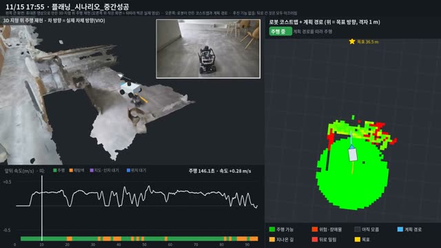
11/15 실내11/15 · 강의실 옆 복도 실내 시나리오강의실 옆 복도 장애물 시나리오 18회 + ㄹ자·교실 시험. 휴대폰 영상으로 만든 복도 3D 맵 위에 주행 재현. 20:43 복도 시나리오 성공(35.4 m, 목표 32.1 → 1.8 m) · 16:08 ㄹ자 이후 직진 코스 목표 도착. 17:55·18:44는 마지막 장애물에서 막힘.
 11/12 야지
11/12 야지11/12 · 야지 숲길 27회 — 3D 재현숲길·오르막 자율주행 27회, 도착 2회. 휴대폰 3D 맵 4곳에 위치·자세를 맞추고 뒤로 밀린 구간(최대 3.0 m)을 표시.
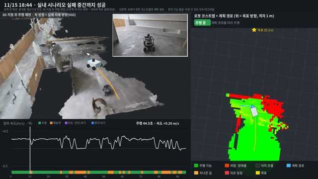
3D 맵 모음 — 장소별 3D 맵 돌려 보기야지 맵1~7과 강의실 옆 복도 맵. 맵을 고르면 회전·확대하며 보고, 맵에 맞춘 주행 궤적을 겹쳐 볼 수 있다.
A
야지 — 장소별
11/12 숲길. 장소마다 휴대폰으로 찍어 3D 맵을 만들고 그 위에 주행을 겹쳤다.
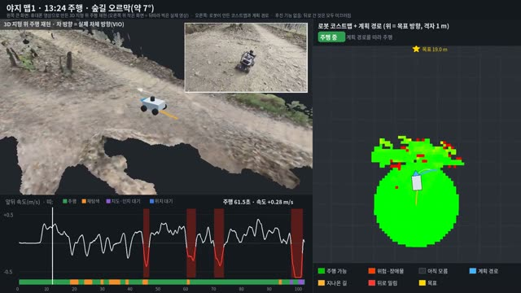
11/12 야지맵1 · 숲길 오르막 (약 7°)휴대폰 영상 3D 맵. 13:24·13:29 두 주행이 로봇 카메라로 정밀 정합(오차 3 cm), m 단위·중력 기준.
2회
2회
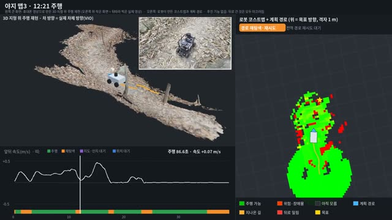
11/12 야지맵3 · 낙엽 숲길13:01 정밀(6 cm)이 기준, 나머지는 따라 찍은 휴대폰 위치로 대략(±1 m) 정합.
8회 · 도착·근접 2회
8회 · 도착·근접 2회
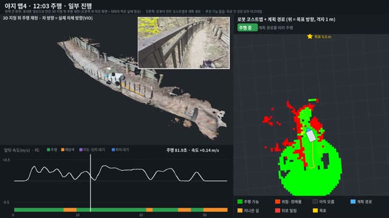
11/12 야지맵4 · 울타리 길12:03이 로봇 카메라 41장으로 정밀 정합(3.5 cm) → 이 맵의 중력·m 단위 기준. 12:07 목표 도착.
2회 · 도착·근접 1회
2회 · 도착·근접 1회
 11/12 야지
11/12 야지맵5 · 나무 난간 길정밀 주행이 없어 축척(휴대폰↔VIO)·위 방향(지면)을 추정한 맵.
2회
2회
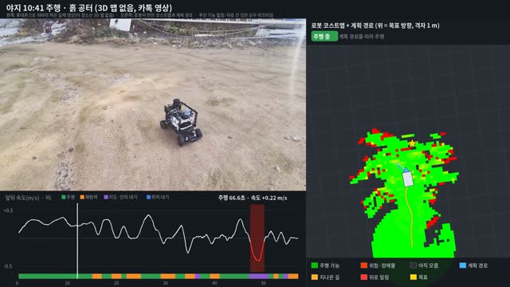
11/12 야지3D 맵이 없는 장소실제 영상 + 로봇 코스트맵만. 10:41·10:49·10:53은 다른 휴대폰(카톡) 영상을 화면 움직임↔로봇 속도 상관으로 맞춤.
10회 · 도착·근접 1회
10회 · 도착·근접 1회
 11/12 야지
11/12 야지영상 없음따라 찍은 영상이 없어 주행 카드만 있음.
3회
3회
B
실내 — 시나리오별
교실·복도·공터·지하주차장.
11/15 실내
11/15 · 강의실 옆 복도 시나리오18회 · 17:55, 18:05, 18:08, 18:14, 18:39, 18:44…
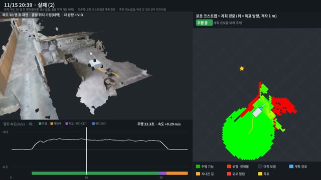
11/15 실내11/15 · 복도 짧은 목표 시험1회 · 20:39
 11/15 실내
11/15 실내11/15 · 교실 → 복도 / 교실 → 밖4회 · 15:37, 15:39, 15:45, 15:54
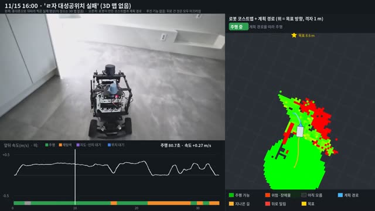
11/15 실내11/15 · ㄹ자 코스·직진·야지 모델 시험3회 · 16:00, 16:05, 16:08
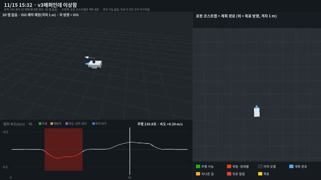
11/15 실내11/15 · v3 매퍼 짧은 시험2회 · 15:32, 15:42
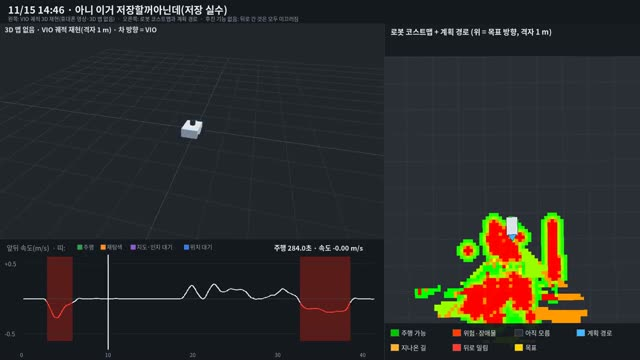
11/15 실내11/15 · 저장 실수로 남은 기록 (참고)2회 · 14:46, 15:03
 11/13 실내
11/13 실내11/13 · 교실 ㄱ자 코스2회 · 20:25, 20:28
 11/13 실내
11/13 실내11/13 · 강의실 앞 ㄱ자·ㄹ자 코스3회 · 20:36, 20:38, 20:43
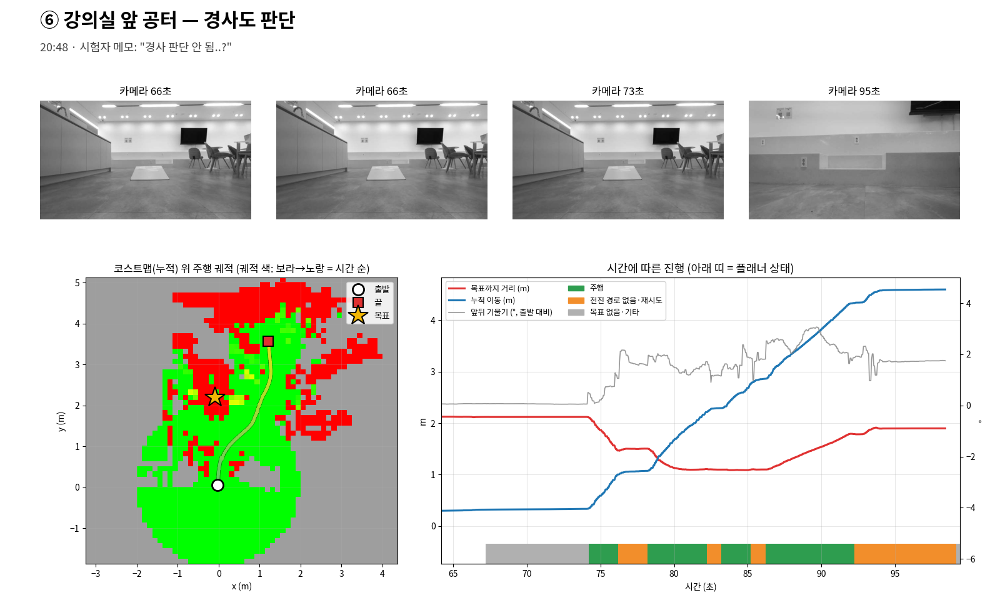
11/13 실내11/13 · 강의실 앞 공터 경사 판단4회 · 20:48, 20:51, 20:53, 20:56
 11/13 실내
11/13 실내11/13 · 지하주차장 경사 오르기2회 · 23:02, 23:07
D
위치추정 — VIO + GNSS 융합
11/17핵심
- GNSS 품질은 위성 수보다 하늘이 트인 정도(PDOP)가 좌우 — 야지는 단독 측위로도 cm 단위로 따라감, 건물 테라스는 RTK FLOAT로 떠다녀 사용 불가.
- VIO 좌표는 출발 방향 기준 → GNSS와 방향이 녹화마다 다름 → 방향 정렬이 먼저.
- 지자계: 정지 2~3초면 정렬, 오차 5~10° · 직진 쌍 최적화: 약 20 m 직진 후 정렬(경사2 −166°, 정답 −170°), 10 m 이하 녹화는 미확정.
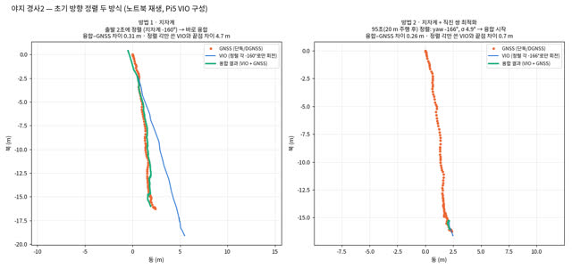
11/17 위치11/16~17 · GNSS 상태와 방향 정렬 두 방식 — 목차요약 3개 · 녹화별 5개 · 다음 시험
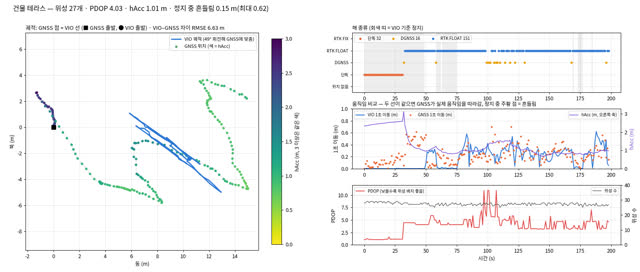
① GNSS 상태 — 건물 vs 야지야지 PDOP 0.9 · 흔들림 3~5 cm / 건물 테라스 PDOP 4 · RTK FLOAT로 최대 7 m 떠다님
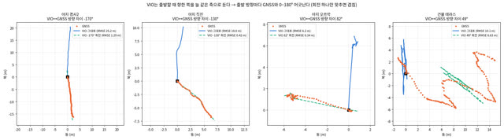
② 왜 방향 정렬이 먼저인가VIO와 GNSS 방향이 녹화마다 −170°~+82° 다름. 회전 하나만 맞추면 겹침
③ 정렬 방법 두 가지지자계(2~3초, 오차 5~10°) vs 지자계 + 직진 쌍 최적화(약 20 m 직진 후 정렬, 오차 약 4°)
C
이전 실물 시험 (10월)
이전 자료초기 센서·지도 시험. 지금 구조와 설정이 다를 수 있다.